Who won the Amstel Gold Race? Human error in photo-finishes
Watching the Amstel Gold Race unfold here in Australia was an effort, as the clock ticked past 1am with still 13km to go. However, when it came to the final kilometers, staying awake was easy, the finale was thrilling and oh-so-close. A breakaway of three, Wout van Aert (in yellow), Tom Pidcock (black) and Max Schachmann (white) started playing cat and mouse to be in the best position before the final sprint as the peloton closed in behind them. Catch the last couple of kilometers here:
Following the end of the race, the broadcasters spent minutes trying to determine the winner and it wasn't until 8 and a half minutes after the race ended they showed the following (quite unprofessional amirite):
Did the race organiser receive the winner piccy via mms? And what about the other organisers in the background also looking at a phone?

The unofficial announcement, the 'provisional' results, the long wait and the warped photo-finish photo all gave the win to van Aert...
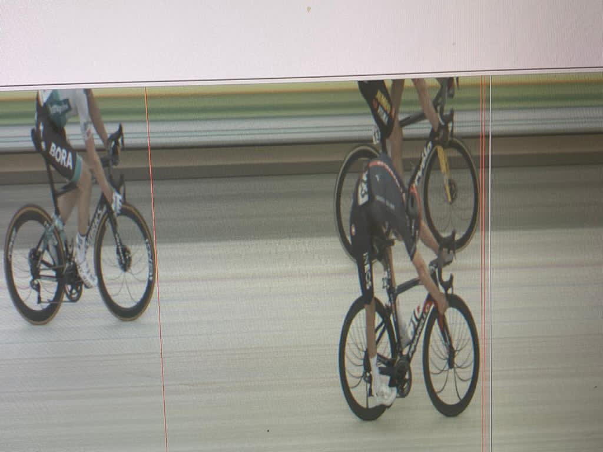
But looking at the slow-mo shots it looked like Pidcock might have won it:
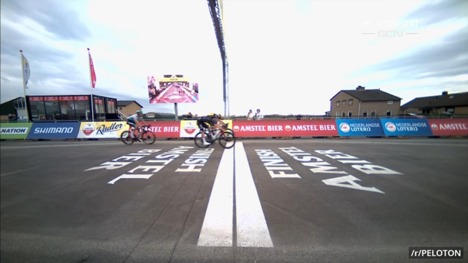
Is there something more going on here?
How photo-finish cameras work
Firstly, the photo-finish is not like a regular photo where the whole image is captured at a single moment in time. Rather, it is taken over a period of time, similar to a video. The camera is mounted perpendicular to the finish line (at a high angle to decrease the chance of a front wheel blocking another) like so:
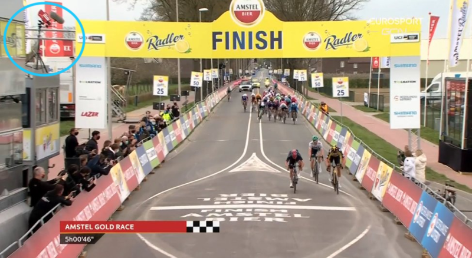
The camera takes up to 3500 photos per second of a single pixel wide slot, with a resolution of 2048 pixels, resulting in each photo being 1x2048. Each of these photos are then lined up in order, resulting in the photo-finish photo which looks similar to a real photo but also distinctly different.
This is also the cause for the blurred looking background (like in the next image) - as it is a single point that is repeated over and over.
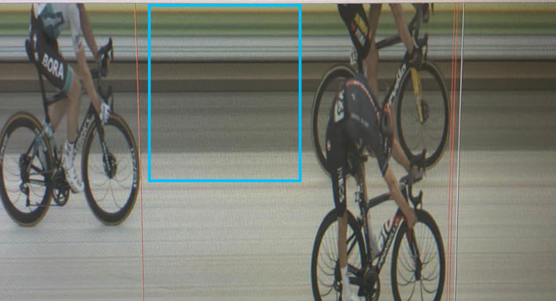
If you're still a bit confused, take a look at this video:
And why did I need to learn that?
Well, what I noticed was that the background in the photo-finish photo is yellow, green and white. Yet in the side-on video of the finish the barrier that lines up with the finish line is red. Why is that?
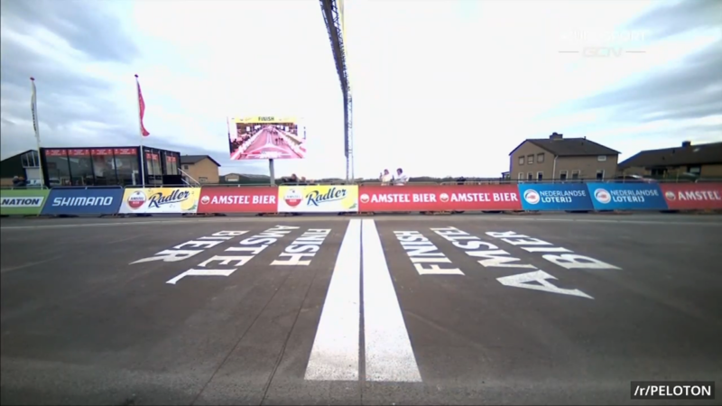
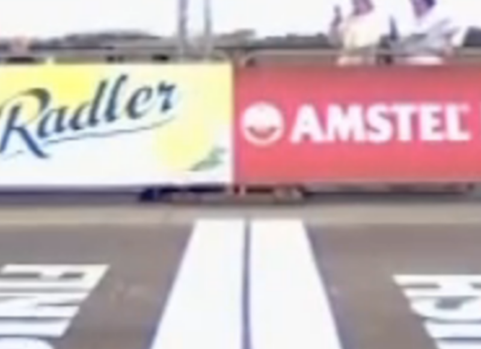
So now the next challenge was to work out where the photo finish camera was actually aligned to. And I saw yellow, green and white and quickly tweeted a couple of times seeing if my thoughts made sense:
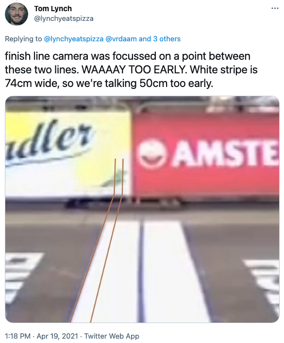
And ended up getting a shout-out on the GCN Racing News Show the following day.
Now I must note, at that point in time I'd misread some UCI docs and thought that each white band was 74cm wide, but in fact, each band is 34cm wide, with a 4cm black line in the middle making a total of 72cm.
But it took this tweet from Inoes followed by Tom Pidcock's reply to really get me invested in researching this further:
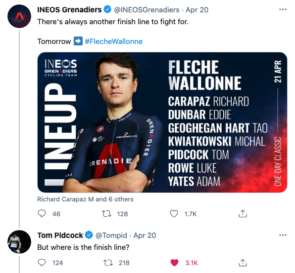
Let's find the finish line for Pidcock
So I replied with what I knew and was quickly corrected by @LaFlammeRouge16
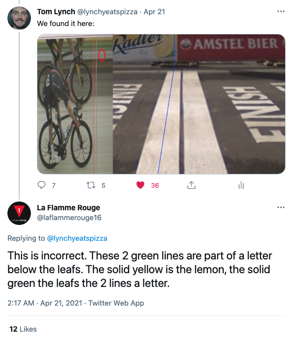
and from there La Flamme Rouge and I began working together to solve this.
After searching through many pictures we found this shot which included a better picture of the banner:
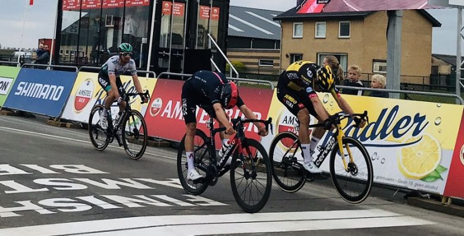
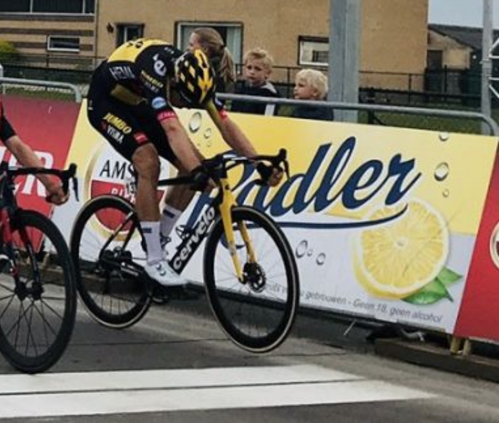
Which allowed us to work out which letters could possibly form the two green lines through the white section. Looking up Amstel Bier Radler we can find their little slogan, Met trots voor u gebrouwen - Geen 18, geen alcohol. Below the green lemon leaves are the words geen alcohol and within these words, the only letters that can be cut with two intersections are the letters c and o.
From here I zoomed in and drew some vertical lines onto the barrier through the c and the o in the most likely positions.
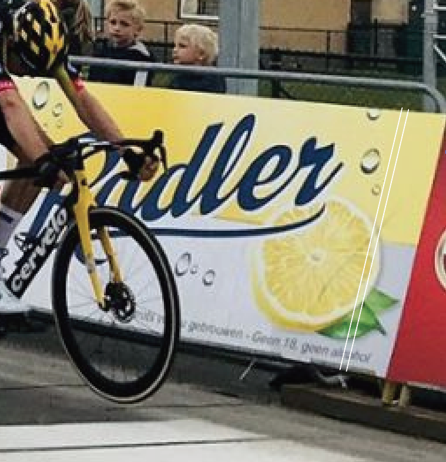
With the o seeming the most obvious as the dark bit on the leaf matches the top of the photo-finish blur:
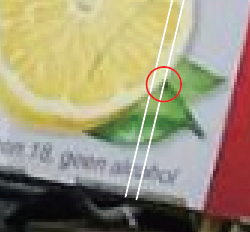
So I played around a bit in photoshop to see if it matches (flick through to get the idea):
And it does! (Throughout the discussions with La Flamme Rouge I'd also tried stretching the Radler logo many times with no success to matching it, but it seems the printing of the logo on the barrier has resulted in it being different enough for that to not work.)
Matching this all back up to the side video of the finish (I have used the end of the women's race earlier in the day (won by Marianne Vos) as the lighting is better to determine the dark lemon leaves on the Radler sign), we can draw a line where the photo-finish camera is pointing, and then extrapolate to determine where on the white band the photo-finish line was focussed.
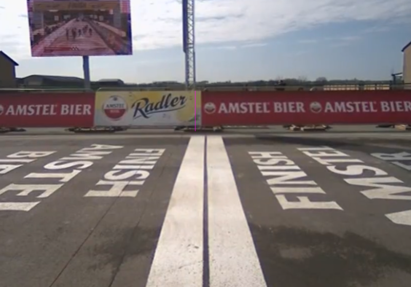
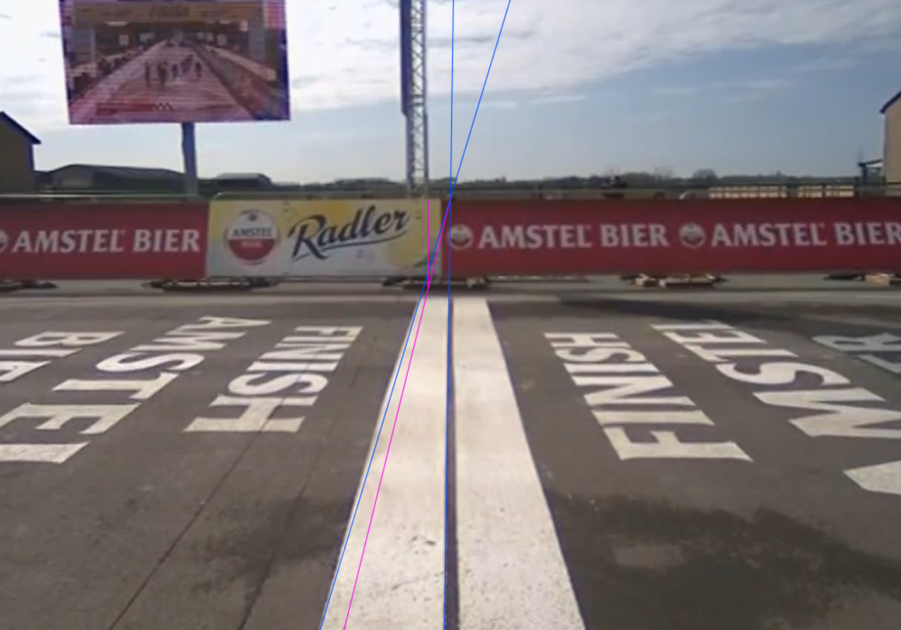
Please note that due to the camber of the road (the center is higher than the edges to allow drainage) the straight leading blue line does not perfectly follow the front of the white band.
Using the lines we can then measure the pixels and make some calculations:
The first measurement was 7 pixels of a total of 33 pixels, resulting in the photo-finish being focussed at 7/33 = 0.2121 or 21.21% of the white band. The second measurement was 29 pixels of a total of 139 pixels, so 29/139 = 0.2086 or 20.86% of the white band, so let's just round both to 0.21 or 21%.
The white band is 34cm wide, so 21% of that is 34*0.21 = 7.14cm. And 34-7.14 = 26.86cm.
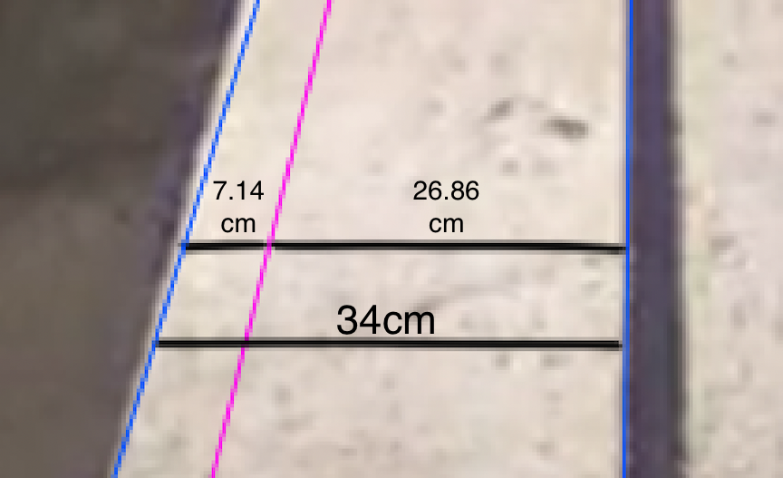
So all in all, I'm estimating the photo-finish was focussed on a point approximately 26.86cm too early.
So who won?
Who knows. At this stage, I haven't yet been able to work it out. We know the photo-finish was set up too early, and given the photo-finish is designed to be the most precise way to determine a winner, having it in the wrong spot means we may never know if Tom Pidcock's extra speed would have allowed him to make up the small distance in the final 26.86cm.
But, I do have a few further ideas on ways to measure this so if you've read this far might as well read on to see if the next paragraph triggers any ideas to solve this lil mystery.
Further research required and how you can help
I have a few thoughts on ways we could determine if Tom Pidcock could have overcome Wout van Aert in the finale. But first, I have managed to obtain the original photo-finish images from the race organisers which haven't been released anywhere else.
Here are the three images I received in the quality they sent them (right click and select 'Open image in new tab' to see them full size):
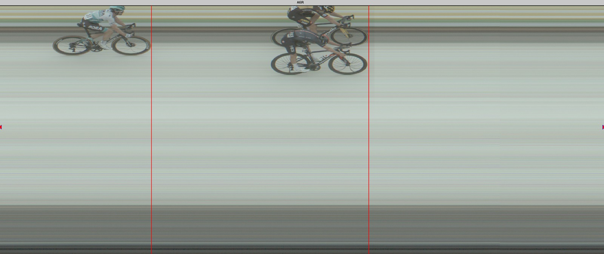

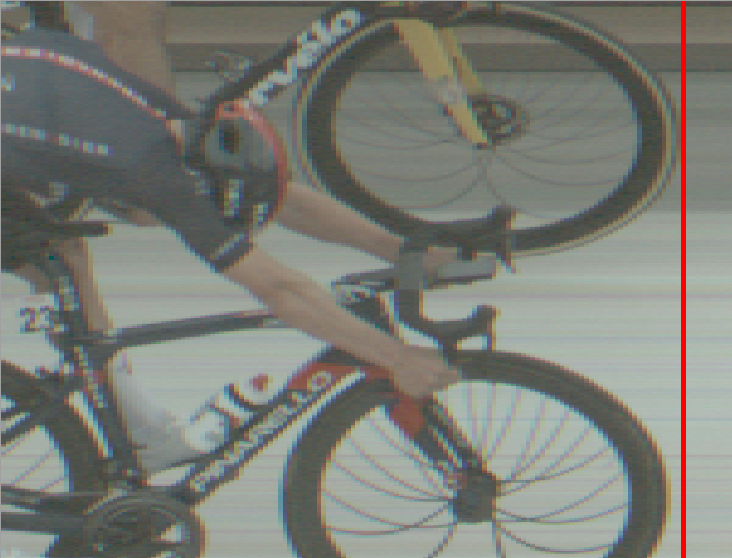
So perhaps with these better resolution photos we could try to determine if Tom Pidcock was ahead ~27cm later. I have a few possible ways to go about this (please hit me up on Twitter (@lynchyeatspizza) if you're exploring any of these options):
-
Measure the width of the wheel in pixels, see if Tom's is shorter than Wout's which means he has more speed.
- This may result in incorrect conclusions due to the bike throw for the line which results in a speed increase of the bike compared to the rider. Potentially the first half of the wheel may be faster than the second half, resulting in the measurements being off.
-
Look at the pattern of the spokes to try to determine the distance traveled since the finish line. The curve is an artefact of the photo-finish line not capturing a moment in time, but a location for a period of time. In the close-up image, you can see the spokes of both riders. The curve of the spokes should mean we can determine the distance the rider has traveled after the photo-finish camera.
-
Both Wout van Aert and Tom Pidcock were likely running 25mm tyres on their 700c wheels resulting in a diameter of around 672mm, or 67.2cm. So 26.86/67.2 = 0.3997 ≈ 0.4, so the photo-finish was approximately 40% of a wheel length too early - So measure when each rider's wheel reaches 40% of the way through. At 40% of the way across a circle, the length of the chord is 96% of the diameter (so just 2% difference at the bottom and 2% difference at the top).
- I think this would allow us to work out the actual winner if it was possible to determine accurately where this 40% occurs (please check my maths and confirm 40% first).
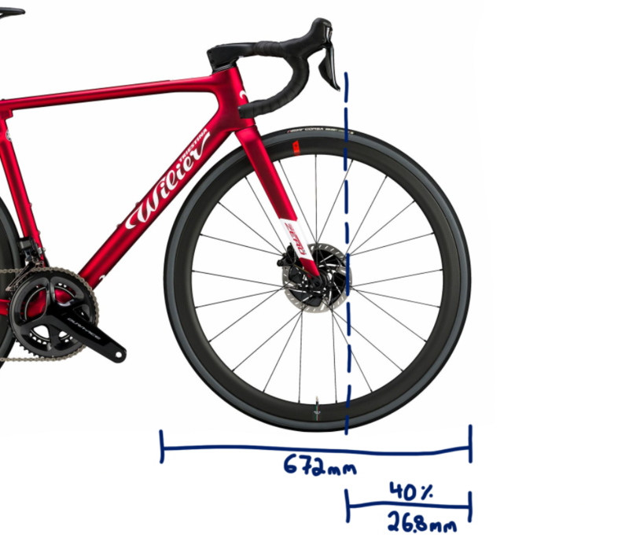
- We would also need to work out what the times say in the bottom of the second photo-finish picture, so we can use that to determine how far Pidcock was behind when crossing the photo-finish line.
Recommendations
To race organisers
- Ensure the company responsible for the timing sets the camera in the right spot (lol that this needs to be stated)
- Ensure you have a way to distribute the photo-finish photo. Horse racing requires photo finishes to be provided to the broadcaster within 60 seconds. Cycling should be the same
To the UCI
- If you're going to have rules in place for organisers regarding photo-finishes (given they determine the winner of the race), then ensure they are abided by. UCI specs (page 227) state there must be:
- two photo-finish cameras, one on each side of the finish
- the camera must be able to take upwards of 3500 photos per second
Yet there was only one camera which took just 2000 photos per second.
- Change the requirements of the paint of the finish line to ensure that photo-finish camera operators have a set line to aim at. Suggestion would be to follow Athletics' example, by painting 2cm wide black spots along the edge of the white band, and aiming for that with the camera - ensuring the photo-finish is within 2cm's of the actual finish. Here's how it works in Athletics - see the black marks across the finish line:
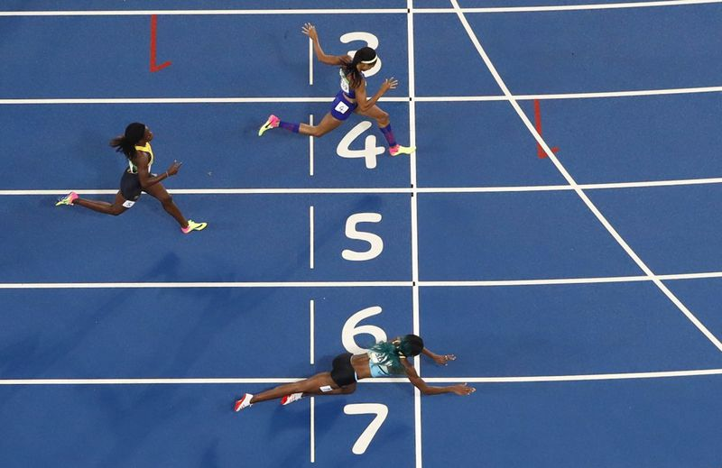
And to finish
- If you’re going to employ tech with a resolution of 1/3500 = 0.0002857s, don’t set it up 0.016s off the mark - that's 56 times the resolution
(assuming riders are traveling at 60kph, the 26.86cm will take 0.016 seconds to travel)
(also it should have been 3500 photos per second but in this case it was just 2000)
Finally
- Thanks to La Flamme Rouge and all the other twitter users who chipped in
- I'll keep an eye out on twitter if anyone else wants to get involved
- I'm looking for a software engineering job, let me know if you're building something fun
- Oh and hit up my socials or subscribe down below if you wanna stay up to date on it 😊
EDIT: I now have a follow up post here